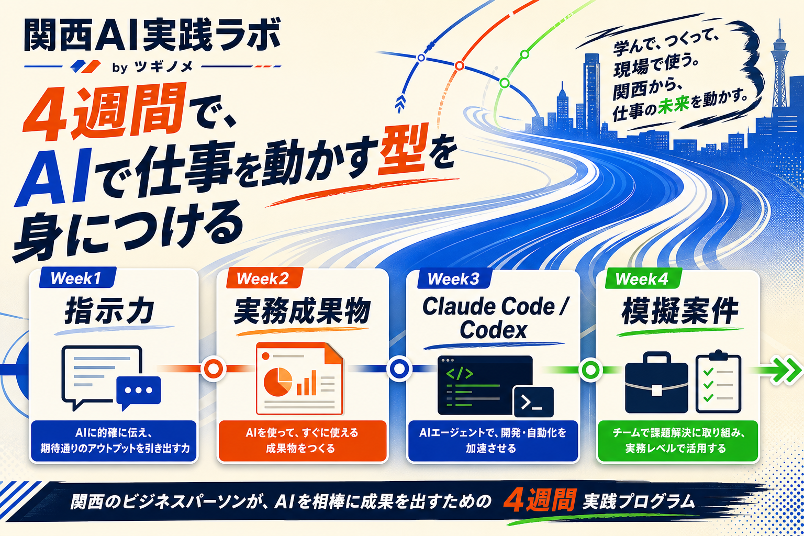
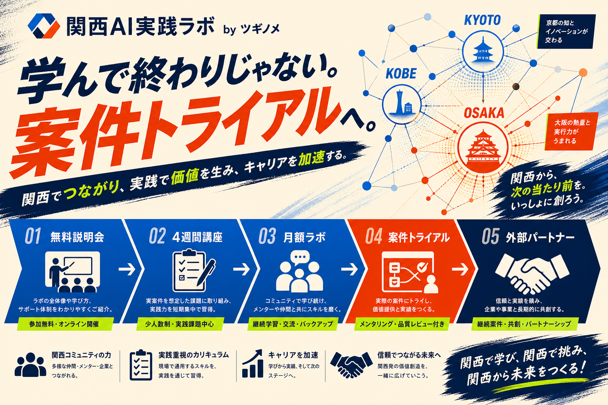

ConceptAIチャットで
AIチャットで
終わらない。
「便利に使える」から一歩進んで、AIに作業を任せ、成果物を作り、実務を巻き取れる人材を関西で育てる。
1
非エンジニア向け
コードを書く人ではなく、AIに指示して仕事を前に進める人を育てる。
2
関西で会える
大阪開催を軸に、顔が見える関係で学び、評価し、つながる。
3
案件候補化
講座後は選抜制でツギノメ案件トライアルへ。保証ではなく実力評価。
4 Week Program4週間で、
4週間で、
型をつくる。
指示力、成果物制作、Claude Code / Codex実践、模擬案件納品まで一気通貫。

Week 1
指示力
AIに任せるための依頼、確認、修正、品質チェック。
Week 2
実務成果物
リサーチ、営業リスト、LP構成、提案資料。
Week 3
Claude Code / Codex
LP、業務ツール、診断フォームをAIに作らせる。
Week 4
模擬案件
納品、報連相、修正対応、案件トライアル説明。
DMM/SHIFT AIが
「全国で大量に学ぶ場所」なら、
ツギノメは関西で会って、作って、案件候補になる場所。
Path
学んで終わりじゃない。
月額ラボで継続しながら、課題品質・納期・報連相を見て案件トライアル候補へ。

無料説明会
大阪で接点づくり
4週間講座
課題提出で実力確認
月額ラボ
継続学習と関係維持
案件トライアル
選抜制で模擬/実案件へ
外部パートナー
ツギノメの実行リソース化
Plan
0期プラン案
まずは少人数で検証し、受講生ニーズと案件候補化の精度を確認する。
0期講座
49,800円
4週間 / 定員10名 / 関西在住者優先
月額ラボ
9,800円〜
勉強会、課題添削、案件トライアル案内
初期KPI
説明会20名、申込10名、完走8名、案件候補3名、月額加入5名。
Competitors
競合比較
LP上では簡潔に。詳細比較は内部資料ページへ。
| 区分 | 競合 | 特徴 | 関西AI実践ラボの勝ち筋 |
|---|---|---|---|
| 全国オンライン | DMM / SHIFT AI | 大量コンテンツ、月額、コミュニティ | 関西リアル、少人数評価、案件トライアル |
| 個別指導 | SAMURAI ENGINEER | マンツーマン、Claude Code/開発寄り | 非エンジニア向けに実務成果物へ寄せる |
| 独学教材 | Udemy / Zenn | 安価・無料だが伴走や評価は弱い | 課題添削、会える場、ツギノメ接続 |
| 本構想 | 関西AI実践ラボ | 大阪開催、4週間、月額ラボ、選抜制案件トライアル | ツギノメの外部パートナー候補を育てる |
Next Actionまずは0期、
内部資料を見るまずは0期、
10名で始める。
説明会LP、申込フォーム、4週間課題テンプレ、評価表を作れば募集開始できる状態。